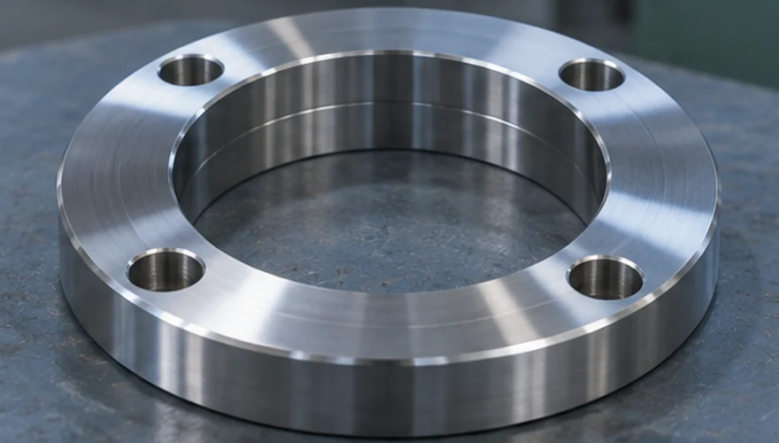
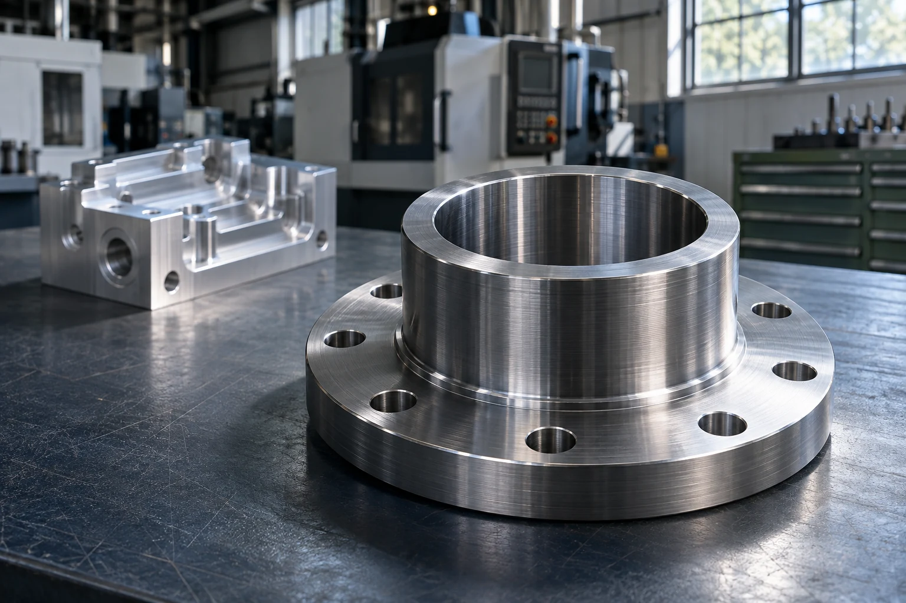
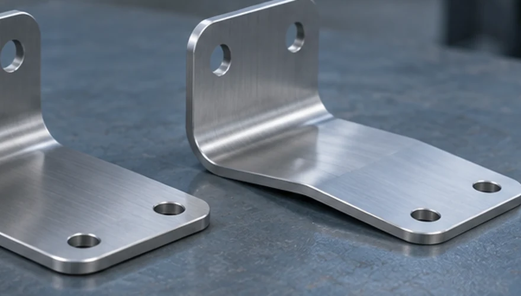
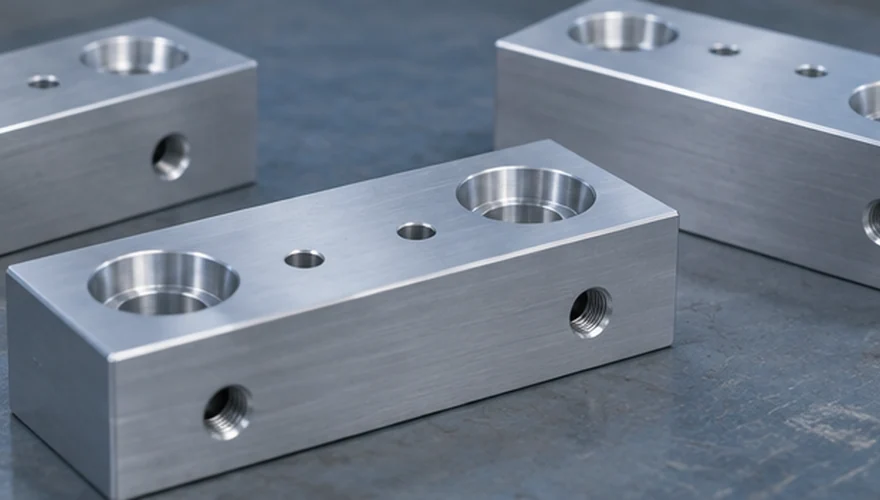
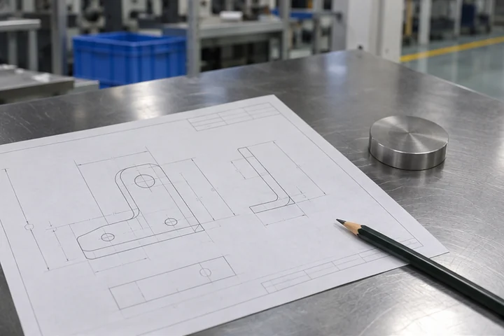
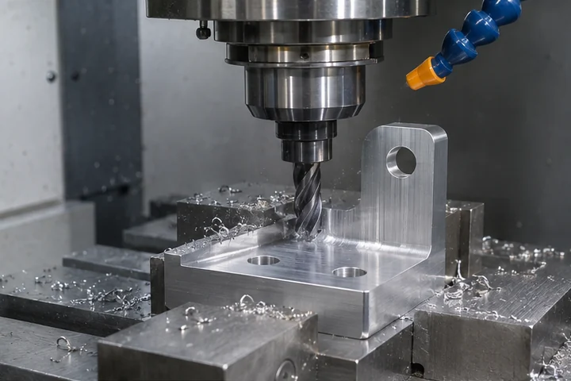
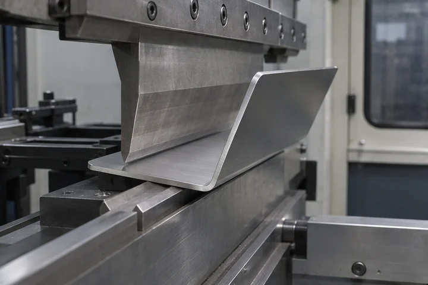
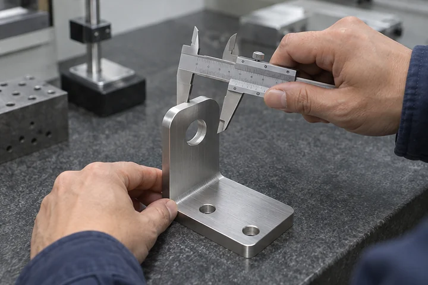

架空の企業情報を使用したデザインサンプルです。
加工事例
形状や用途に近い事例から、対応素材や加工方法をご覧いただけます。


事例と写真はイメージです。
製作工程
図面の確認から、加工、検査まで。必要な工程は部品の仕様に合わせて決めます。
-

図面・仕様の確認
用途、寸法、素材を確認します。既存品の写真からの相談も可能です。
-

切削・穴あけ
旋盤やマシニングセンタで、指定の形状と寸法に仕上げます。
-

板金・組立
板材を曲げ、必要に応じて固定金具や別部品と組み合わせます。
-

寸法検査・出荷
図面に沿って寸法や外観を確認し、傷や変形を防ぐように梱包します。
図面や写真から、
見積もりの相談を。
ご相談の際は、作りたい部品の用途と数量をお知らせください。図面・スケッチ・現物写真があれば、加工方法を検討しやすくなります。
デモ画面では入力内容やファイルは送信されません。
用途と希望条件を伝える
用途・数量・希望時期を記入。素材や寸法が未定でも相談できます。
図面や写真を添える
2D図面、スケッチ、見本になる部品の写真などを用意します。
加工方法と見積もりを確認
対応できる加工方法を確認し、費用と納期をすり合わせます。